Fomento Cultural Banamex
Grandes Maestros del Arte Popular Mexicano
Figura en el directorio de Grandes Maestros del Arte Popular Mexicano, 20 años (Fomento Cultural Banamex, 2019), con la especialidad de talla policromada.
Ver su fichaMaestro mascarero · Suchitlán, Colima
Talla y pinta a mano máscaras de madera para la Danza de los Morenos, las pastorelas y otras danzas de su pueblo. Heredó el oficio de su padre, el mascarero don Herminio Candelario.

El maestro
Gorgonio Candelario Castro talla y pinta máscaras de madera en Suchitlán, pueblo del municipio de Comala, al pie de los volcanes de Colima. Es hijo de don Herminio Candelario Dolores, mascarero reconocido dentro y fuera de Colima y nombrado Gran Maestro del Arte Popular, y nieto de don Basilio. De su padre heredó el talento, y de su padre y de su abuelo, la pasión por las danzas y ceremonias de su comunidad.
Sus máscaras dan rostro a las nueve parejas de animales de la Danza de los Morenos, desde el coyote y el chivo que la encabezan hasta los tecolotes, las guacamayas y los perros. También talla El Tiempo, máscara de tres rostros, y La Noche, de dos; nahuales, diablos, pastores y ángeles de pastorela, y los siete pecados capitales. Conserva los diseños tradicionales y, a partir de ellos, ha creado otros.
Su hermano menor, José Guadalupe, también mascarero, organiza la Danza de los Morenos; don Gorgonio, el mayor, se concentra en las máscaras. Dos máscaras suyas de 1995 están en el Museum of International Folk Art de Santa Fe, Nuevo México, y su nombre figura en el directorio Grandes Maestros del Arte Popular Mexicano, 20 años, de Fomento Cultural Banamex.
Tradición de Suchitlán
Dieciocho danzantes con máscaras de animales recorren de madrugada las calles de Suchitlán al son de una vihuela. Es una tradición propia de este pueblo, y la familia Candelario la ha sostenido por generaciones.
Según José Guadalupe Candelario, hermano de don Gorgonio y ensayador de la cuadrilla, la danza representa la defensa que hicieron los animales del cuerpo de Jesús mientras estuvo en el sepulcro. Como en el Arca de Noé, los animales salen en parejas, macho y hembra. Otra versión, difundida sobre todo fuera de Colima, cuenta que bailaban para distraer a los soldados romanos que custodiaban la tumba.
En Suchitlán se dice que las nueve parejas recuerdan los nueve meses de embarazo de la Virgen María y los nueve días del novenario de un difunto. Y se dice también que una máscara no está completa hasta que ha sido danzada.
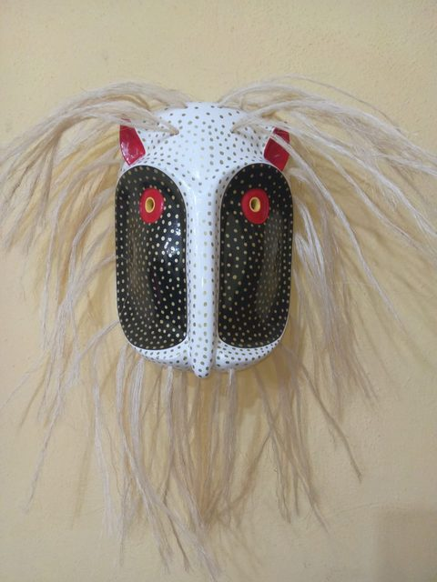
Cada animal sale dos veces, macho y hembra: dieciocho máscaras. Al frente van los capitanes, el coyote y el chivo, y detrás de ellos sus hembras, la coyota y la chiva.
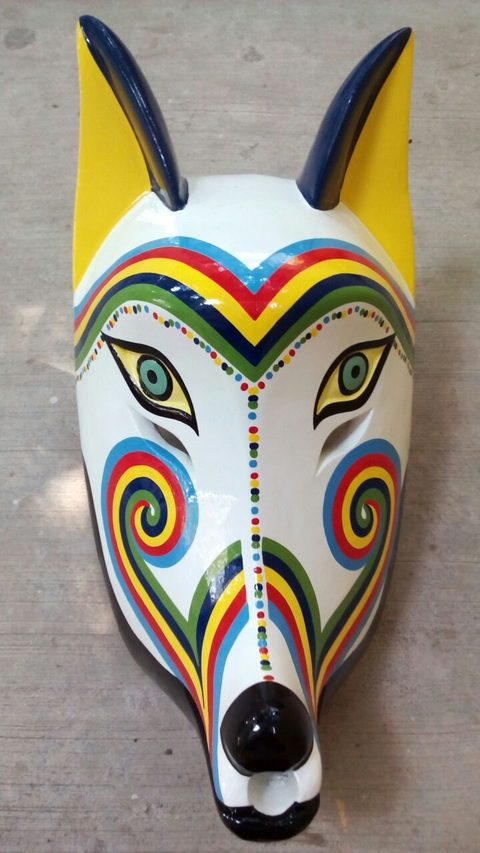
1 Coyotes Capitán · la inteligencia
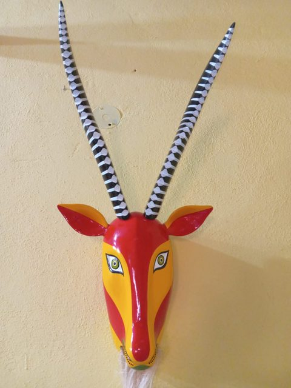
2 Chivos Capitán · la unión y la fuerza
3 Borregos cimarrones La fuerza y la testarudez
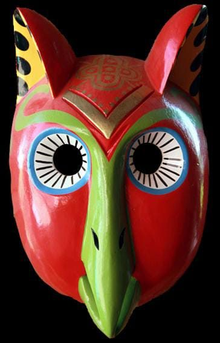
4 Tecolotes La sabiduría
5 Lince y ocelote Los felinos · la agilidad y la destreza
6 Burros Macho y hembra
7 Guacamayas Macho y hembra
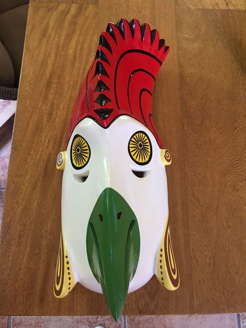
8 Gallos Macho y hembra
9 Perros Macho y hembra
En Semana Santa comienza de madrugada. También se presenta por invitación.
A la cuadrilla la acompaña un vihuelero que toca sin máscara. Antes la música era de violín, y esa melodía se perdió. Hoy José Guadalupe organiza la danza, la enseña y toca la música.
Los danzantes visten un traje tosco de yute, con pantalón y blusón muy holgados y una capa hecha de costales de ixtle. Cada uno lleva una sonaja de bule pintada y un machete de madera o un bastón. Don Gorgonio también ha hecho machetes y sonajas para la danza.
Don Herminio empezó a tallar máscaras para los Morenos a los nueve años. Sus hijos mantienen viva la danza: José Guadalupe ensaya y dirige la cuadrilla, y don Gorgonio talla las máscaras.
En 2023, la Danza de los Morenos ilustró el billete de la Lotería Nacional que conmemoró los 500 años de Colima. Está registrada en el Inventario del Patrimonio Cultural Inmaterial de la Secretaría de Cultura, con la información que aportó José Guadalupe Candelario.
Para saber más: INAH, «Danza de morenos: animales y religiosidad en Suchitlán» · Universidad de Colima · México Desconocido · Videos en YouTube: don Guadalupe Candelario explica la danza y presentación en la Feria de Todos Santos de Colima.
La técnica
Cada máscara se talla a mano en madera, se pinta capa por capa y se termina con detalles hechos uno por uno. Es la técnica que la familia Candelario ha transmitido de padres a hijos, y la especialidad por la que Fomento Cultural Banamex incluye a don Gorgonio entre los Grandes Maestros del Arte Popular Mexicano.
La madera principal. Es lo bastante blanda para tallarse y lo bastante resistente para durar. También se le llama tzompantle.
Otra madera suave de la región, que se labra bien.
Más dura que el colorín. En Suchitlán se usa para las piezas que deben resistir más.
En la familia Candelario, el árbol se prepara en luna llena: se le quita la corteza a metro y medio del suelo, se espera ocho días y se derriba sin tocar la raíz, cuenta José Guadalupe.
Se parte y secciona el tronco y se vacía la pieza por dentro. Con el angaro, herramienta de los mascareros de Suchitlán, se desbasta y se le da forma al rostro.
Con cuchillos de varios tamaños se afinan las facciones y se abren los ojos, la nariz y la boca. En las máscaras que se bailan, ojos y boca quedan abiertos; en las de colección, a veces solo se pintan.
Se lija, se pule y se resanan las imperfecciones. Después se aplica una base blanca, de blanco de España, que tapa el poro de la madera.
Sobre la base se pintan varias manos de color y, al final, los filetes, puntos, grecas y espirales, uno por uno, hasta el acabado brillante.
Algunas máscaras llevan fibra para el pelo o la barba. Los cuernos del borrego cimarrón se tallan en la misma madera; los del chivo, más largos, se pegan y se clavan.
¿Cuánto tarda una máscara? Una máscara puede llevar unos tres días de trabajo, de hasta doce horas diarias. Un borrego cimarrón, con sus cuernos tallados en la misma pieza, puede llevar de diez a quince días.
Acercamientos a la talla y la policromía de don Gorgonio.


Su obra
Una muestra de las máscaras que talla y pinta a mano en su taller. Toca una foto para verla en grande.
Chivos, coyotes, tecolotes y gallos: algunos de los animales que bailan en parejas, macho y hembra, en la Danza de los Morenos.
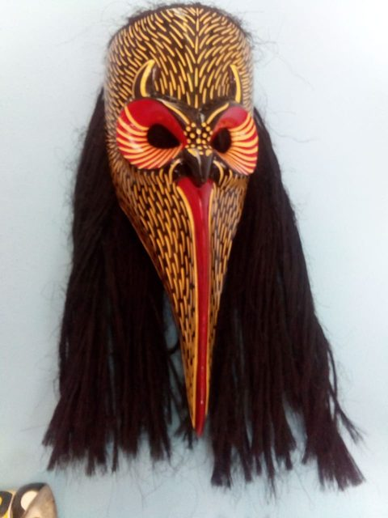
El Tiempo tiene tres rostros y La Noche, dos, uno de ellos azul. Junto a ellas, rostros partidos entre la vida y la muerte.

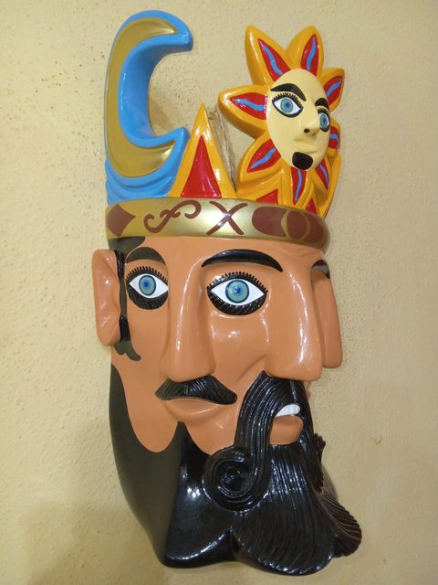
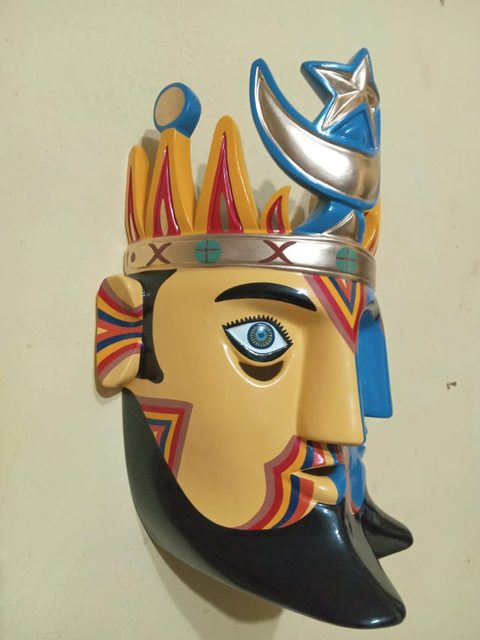
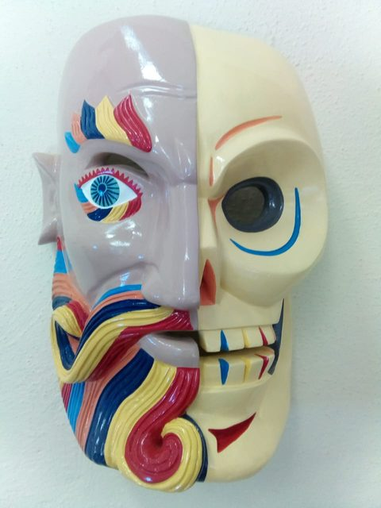
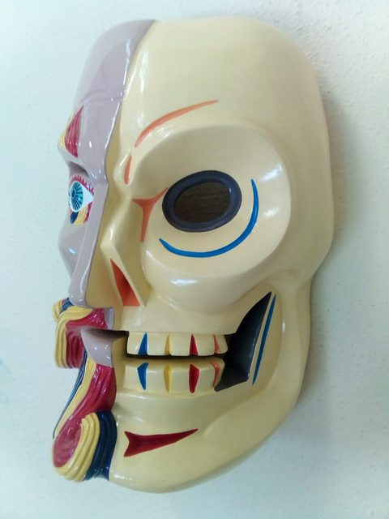
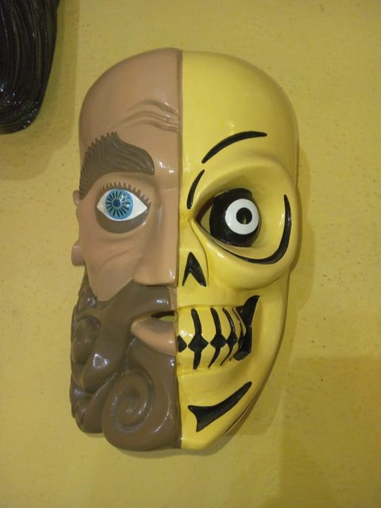
Un nahual con forma de felino, un rostro negro de cresta roja, otro con alas coronado por un ave, tres máscaras negras con estrellas y lunas, y un hombre barbado.
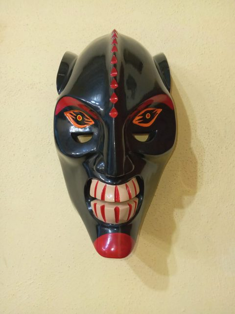
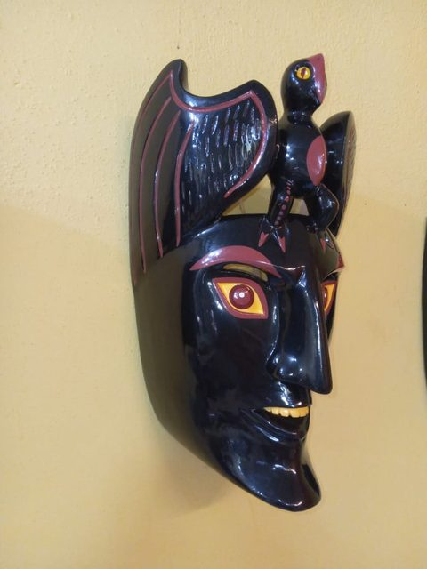
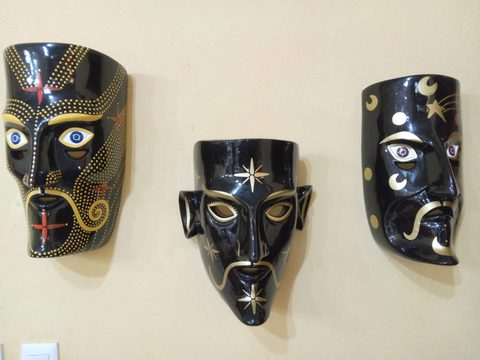
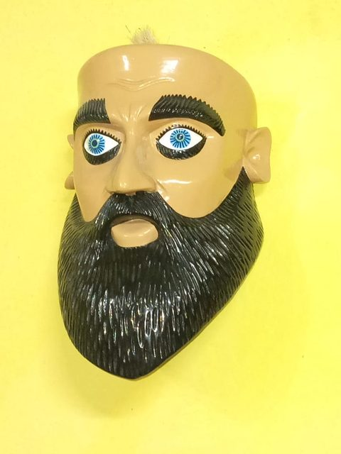
También talla otros animales: un tecolote sobre un tigre, un venado y hasta un gorila.
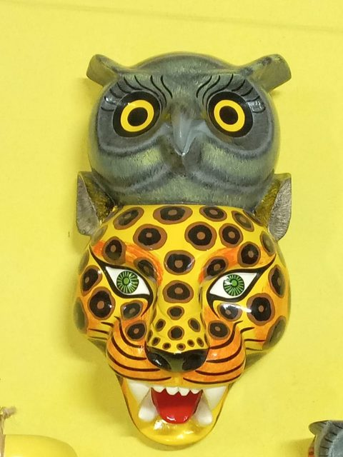
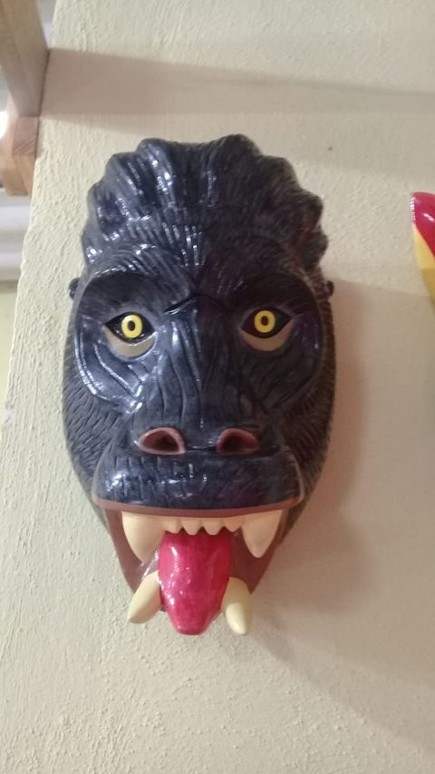
Reconocimientos
Fomento Cultural Banamex
Figura en el directorio de Grandes Maestros del Arte Popular Mexicano, 20 años (Fomento Cultural Banamex, 2019), con la especialidad de talla policromada.
Ver su fichaSanta Fe, Nuevo México
El museo conserva dos máscaras suyas de 1995: un tecolote de la Danza de los Morenos y El Tiempo, para la pastorela.
Ver la máscara del tecolote Ver la máscara «El Tiempo»La herencia
Su padre, don Herminio Candelario Dolores, fue nombrado Gran Maestro del Arte Popular. Su máscara El Padre Tiempo (1985) forma parte del acervo del Museo Franz Mayer, en la Ciudad de México.
Verla en Google Arts & CultureVideos
El taller
En su taller de Suchitlán, don Gorgonio recibe a quienes quieran conocer de cerca la talla policromada y llevarse una máscara hecha a mano. Antes de ir, llama para confirmar que pueda recibirte.
Prensa